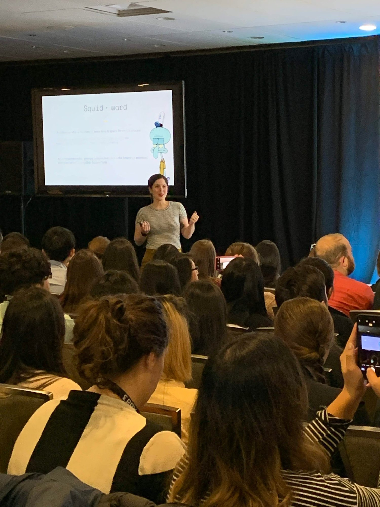
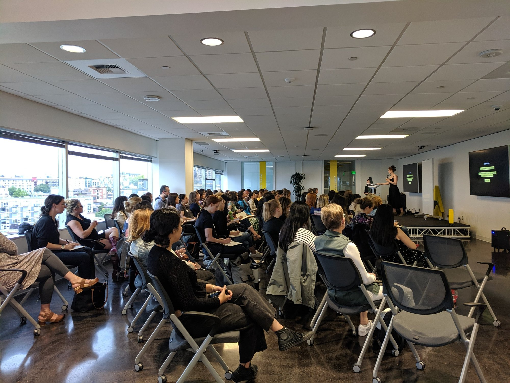

Dealing with Squidwards (aka, “People Who Don’t Care about the UX Process”)
I shared advice on bringing reluctant cross-functional partners into the design process to an audience of 100+. View the slides

I shared advice on bringing reluctant cross-functional partners into the design process to an audience of 100+. View the slides
In this episode of the podcast, my colleague Andrea Neuhoff and I spoke with Sophia Prater about our work together at Duo Security, how they we brought OOUX to Duo for a double whammy of complexity wrangling, and how taking all of people's weird behaviors into account helps design better online security products. View the episode

During an onsite interview, companies will often ask candidates to do off-the-cuff sketches to give them a better idea of how you approach design solutions. These live whiteboarding prompts are one of the most intimidating aspects of a design interview, and if you’ve never done one before, it can be hard to know how to prepare.
These popular meetups feature crowds of 100+.